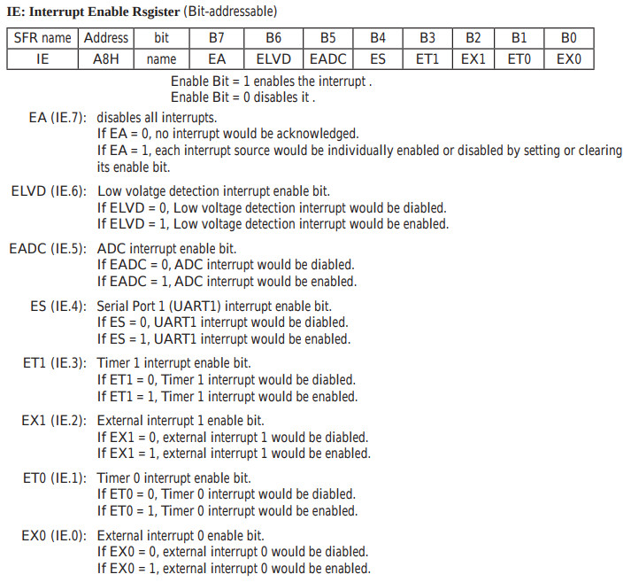
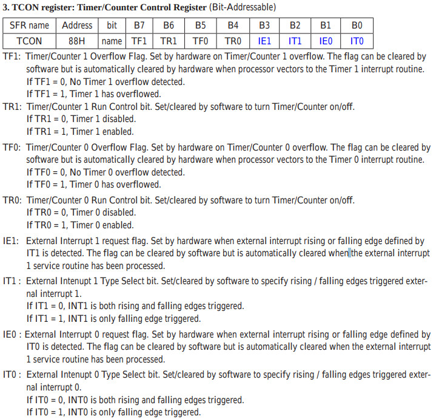

參考資訊：
http://plit.de/asem-51/
http://www.stcisp.com/stcisp620_off.html
https://sourceforge.net/projects/mcu8051ide/
I/O的Input中斷可以使用輪詢(Poll)或者中斷向量(Vector)兩種處理方式，輪詢的方式就是一直檢查中斷旗標，藉此得知Input是否有中斷發生，當然這種方式比較耗CPU資源，因為CPU無法在此期間去做其它事情，另一種方式則是在中斷向量表設定要處理的副程式，當Input中斷發生時，因為Input中斷具有高優先權，CPU會優先跳轉到設定的副程式處理Input中斷
設定步驟如下：
1. 開啟中斷功能(EA) 2. 開啟INT1中斷功能(EX1) 3. 設定觸發方式(IT1) 4. 設定中斷向量表(.org 13h) 5. 撰寫中斷副程式(硬體會自動清除中斷旗標)
IE


btn .equ p3.3
led .equ p3.2
.org 0h
jmp _start
.org 13h
jmp int1_handle
.org 100h
_start:
setb ea
setb ex1
setb it1
setb led
clr c
jmp $
int1_handle:
jc i0
setb c
clr led
reti
i0:
clr c
setb led
reti
.end
P.S. 程式利用C旗標當作LED設定判斷，ON、OFF交互設定
編譯
$ mcu8051ide --compile main.s
完成